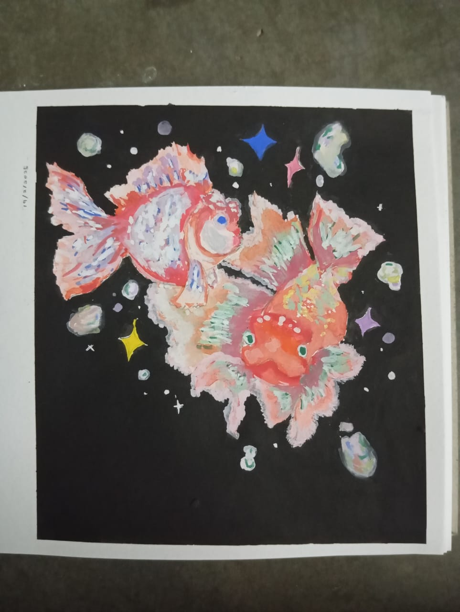
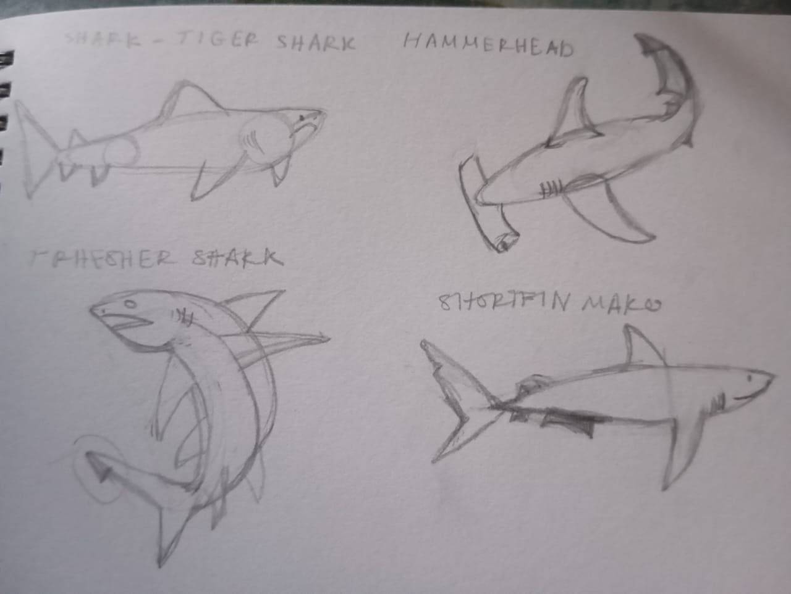
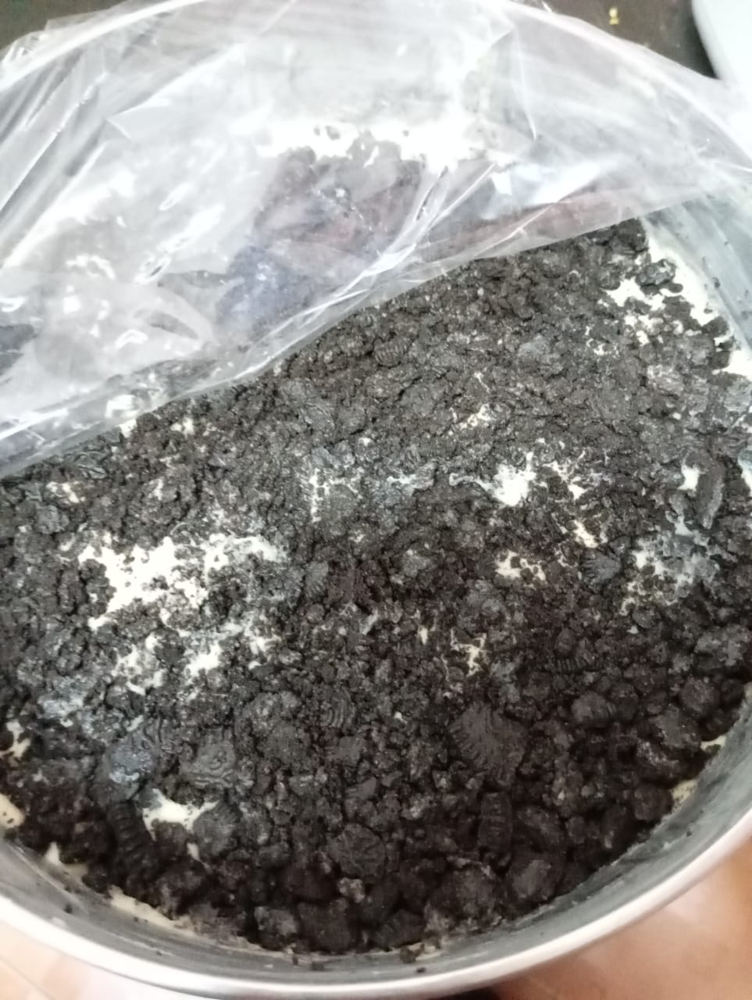
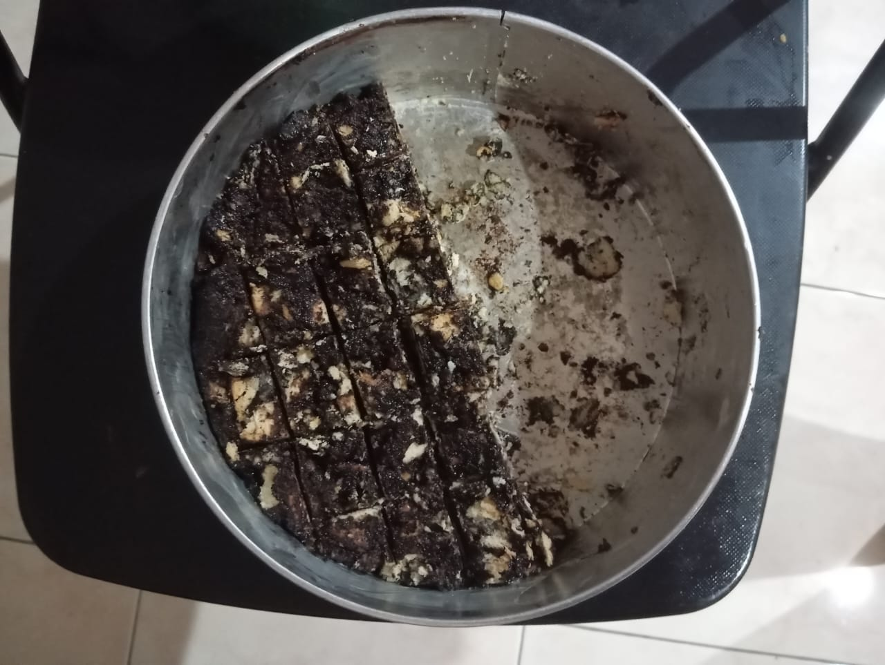
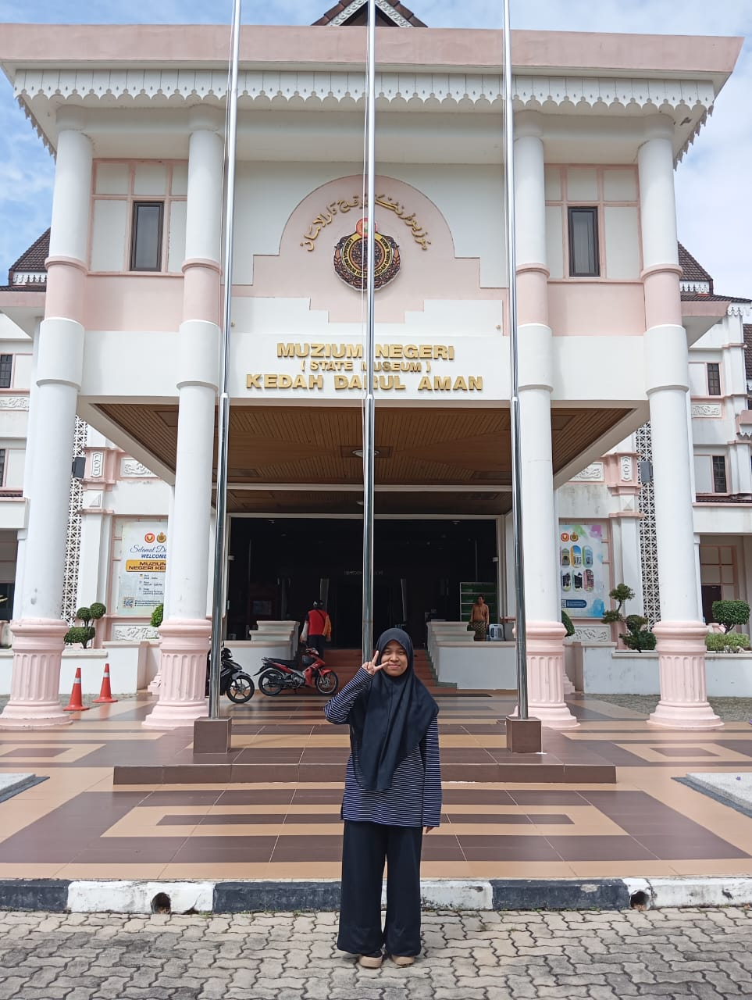
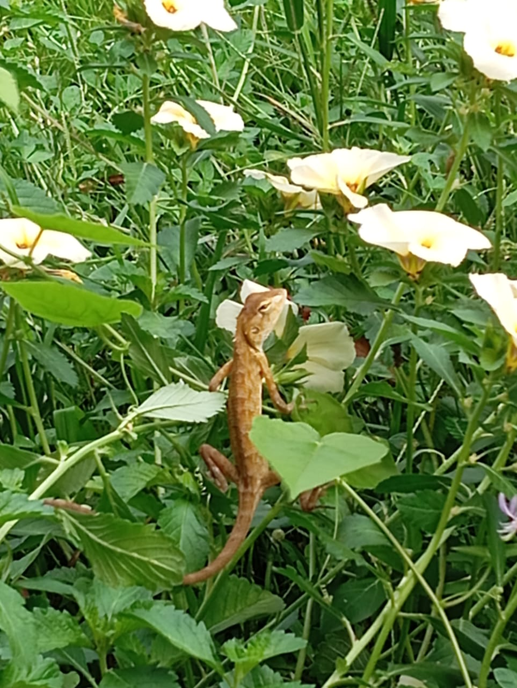

The Mirage Grid — Multimedia Archives
Welcome to The Mirage Grid, the dedicated sensory depository of the domain. This matrix contains curated visual data frames, local campus audio frequencies, and a series of motion captures cataloging daily life anomalies, culinary test runs, and system field trips.
[01] Visual Data Frames
Static graphics processed through artistic development, baking projects, and regional field operations:

Item 01: Goldfish Study (Gouache)

Item 02: Sharks Study (Pencil)

Item 03: Oreo Cheesecake Confection

Item 04: Mainframe Kek Batik

Item 05: Field Trip (Kedah Museum)

Item 06: Unidentified Yellow Lizard
[02] Audio Stream Frequency
A high-priority cultural recording captured directly within the UiTM Kedah campus node:
Campus Transmission: Lemak Manis
Press play below to monitor the live audio file of legendary artist Roslan Madun performing "Lemak Manis" during his official visit to UiTM Kedah:
Source Node: media/lemak_manis.mp3
[03] Motion Archives & System Anomalies
Dynamic video recordings displaying external culinary operations and highly classified, chaotic activities involving *Adik*:
Anomaly Log A: Tactical Harvesting
A concerning data stream recording of *Adik* executing a highly unstable maneuver to harvest fresh rambutan fruit from the branches:
Anomaly Log B: Outdoor Processing
A much more stable, calming sequence tracking an outdoor culinary collaboration, grilling fresh fish over an open fire side-by-side with Mama:
"Mirage Matrix Status: Synced. 6 Image Frames, 1 Audio Frequency, and 2 Motion Logs online."